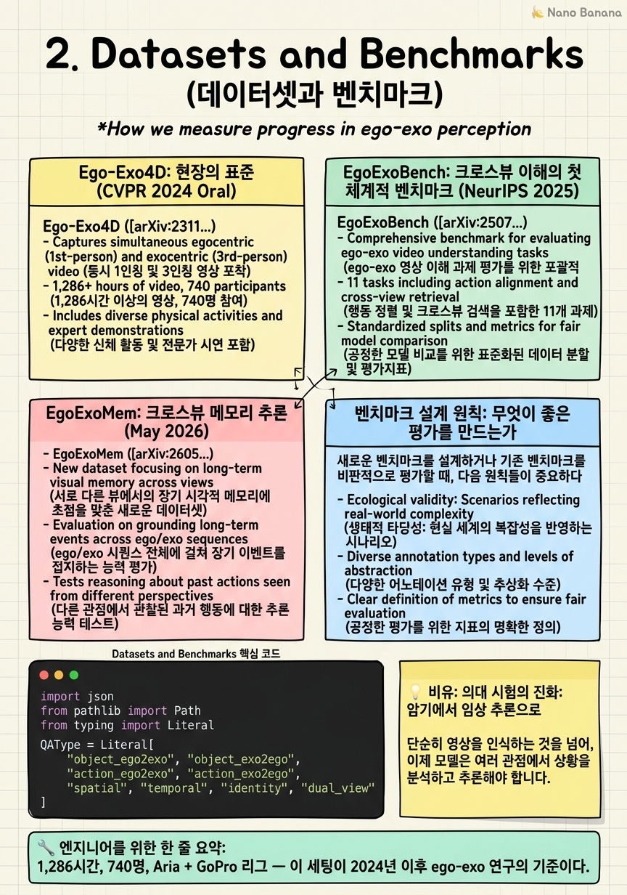

Datasets and Benchmarks

🎯 학습 목표
- Ego-Exo4D의 캡처 설정, 규모, 어노테이션 체계를 정확히 설명할 수 있다
- EgoExoBench의 11개 서브태스크 체계를 이해하고 각 태스크가 측정하는 능력을 설명할 수 있다
- EgoExoMem이 기존 벤치마크와 다른 점과 현재 MLLM의 성능 수준(55.3%)을 설명할 수 있다
- 새로운 벤치마크를 설계할 때 고려해야 할 원칙들을 논할 수 있다
좋은 연구는 좋은 측정에서 시작된다. Ego-exo 연구의 발전은 항상 새로운 데이터셋과 벤치마크의 등장과 함께했다. 어떤 능력을 측정할 것인가, 어떻게 수집할 것인가, 인간 성능 수준은 어디인가 — 이 질문들에 대한 답이 곧 연구 방향을 결정한다.
2024-2026년 동안 ego-exo 벤치마크는 행동 인식 중심에서 크로스뷰 이해 중심으로 패러다임이 이동했다. 단순히 '이 비디오에서 무슨 행동을 하는가?'를 묻는 것에서, '두 시점을 연결해서 이해할 수 있는가?', '한 시점에서 본 것을 다른 시점에서 기억할 수 있는가?'로 진화했다. 이 진화가 현재 모델들의 근본적 한계를 드러내고 있다.
특히 중요한 발견은 현재 최강 MLLM인 Gemini 2.5 Flash가 EgoExoMem에서 55.3%만 달성한다는 사실이다 (EgoExoMem, [arXiv:2605.18734](https://arxiv.org/html/2605.18734)). 텍스트만 쓰는 GPT-4o는 약 45%로, 비디오 입력을 더해도 10%p밖에 향상되지 않는다 — 이는 현재 모델들이 비디오의 크로스뷰 정보를 거의 활용하지 못하고 있음을 의미한다.
핵심 내용
Ego-Exo4D: 현장의 표준 (CVPR 2024 Oral)
Ego-Exo4D ([arXiv:2311.18259](https://arxiv.org/abs/2311.18259))는 Kristen Grauman 등이 CVPR 2024에서 발표한 대규모 멀티뷰 데이터셋이다. 규모: 1,286시간, 740명의 참여자, 13개 도시, 123개 자연 장면 컨텍스트.
캡처 설정:
- Ego 카메라: Meta Project Aria 안경 (8MP RGB + 2개의 SLAM 카메라 + IMU) - Exo 카메라: 장면당 4~5대의 시간 동기화된 GoPro (캘리브레이션 완료) - 오디오: 모든 카메라에 동기화된 오디오 스트림
활동 커버리지: 피아노/기타 연주, 농구/배드민턴, 요리, 자전거/오토바이 수리, 댄스 등 기술 기반 인간 활동(skilled human activities) 중심. 이는 의도적 선택이다 — 기술 수준이 다른 숙련자와 초심자를 비교하는 능숙도 추정(proficiency estimation) 연구가 가능하기 때문이다.
어노테이션 레이어: (1) 타임스탬프된 Keystep 어노테이션 (2) 자유 형식 내레이션 (3) 능숙도 평가 (4) 관계 어노테이션 (ego-exo 의미적 대응). 멀티레이어 어노테이션이 다양한 태스크 연구를 가능하게 한다.
| 속성 | 값 |
|---|---|
| 총 시간 | 1,286 시간 |
| 참여자 수 | 740 명 |
| 도시 수 | 13 개 |
| 장면 컨텍스트 | 123 개 |
| Exo 카메라/장면 | 4~5 대 |
| 캡처 기기 | Aria + GoPro |
EgoExoBench: 크로스뷰 이해의 첫 체계적 벤치마크 (NeurIPS 2025)
EgoExoBench ([arXiv:2507.18342](https://arxiv.org/abs/2507.18342))는 NeurIPS 2025에 발표된 종합 벤치마크다. 7,330개의 다지선다형 QA 쌍을 11개 서브태스크에 걸쳐 구성한다. 이 11개 태스크는 세 가지 핵심 과제로 묶인다:
1. Ego-Exo 의미적 관계 (Semantic Relation)
- 두 시점에서 같은 물체/행동/사람을 인식하는 능력 - 예: '이 ego 클립에서 보이는 손이 잡고 있는 물체가 exo 클립의 어디에 있는가?'
2. 뷰 전환 (View Transition)
- 한 시점에서 관찰한 것을 다른 시점으로 '번역'하는 능력 - 예: 'exo에서 보이는 행동을 ego에서 보면 어떻게 보일 것인가?'
3. 시간적 추론 (Temporal Reasoning)
- 두 시점 비디오 스트림에서 사건의 시간적 순서를 이해하는 능력 - 예: 'ego에서 X 동작이 일어난 후 exo에서 어떤 변화가 관찰되는가?'
이 벤치마크의 핵심 가치는 기존 MLLM들이 이 태스크들에서 얼마나 실패하는지를 체계적으로 드러낸다는 데 있다. 인간 정확도와 최고 모델 간의 격차가 크며, 이는 크로스뷰 이해가 아직 해결되지 않은 문제임을 공식화한다.
EgoExoMem: 크로스뷰 메모리 추론 (May 2026)
EgoExoMem ([arXiv:2605.18734](https://arxiv.org/html/2605.18734))은 2026년 5월에 공개된 최신 벤치마크로, 동기화된 ego-exo 비디오 위에서의 크로스뷰 메모리 추론을 최초로 평가한다.
규모: 2,600개의 객관식 문항, 8가지 QA 유형.
8가지 QA 유형:
1. Object Memory (Ego→Exo): ego에서 관찰한 물체를 exo에서 찾기 2. Object Memory (Exo→Ego): exo에서 관찰한 물체를 ego에서 찾기 3. Action Memory (Ego→Exo): ego 행동을 exo 관점에서 설명 4. Action Memory (Exo→Ego): exo 행동을 ego 관점에서 설명 5. Spatial Memory: 한 시점에서 관찰한 공간 관계를 다른 시점에서 추론 6. Temporal Memory: 두 시점의 시간적 사건 순서 통합 7. Identity Memory: 두 시점에서 같은 사람/물체 식별 8. Dual-View Required: 어느 하나의 시점으로만은 답할 수 없는 문항
핵심 결과: 최강 MLLM인 Gemini 2.5 Flash가 55.3%에 그친다. Text-only GPT-4o는 ~45%. 비디오 추가 이득이 10%p에 불과하다는 것은 모델이 비디오의 크로스뷰 정보를 거의 활용하지 못하고 있음을 시사한다. 논문이 제안한 E2-Select 프레임 선택 방법은 58.2%를 달성하지만, 이는 독립형 MLLM이 아니라 프레임 선택 전략이다.
벤치마크 설계 원칙: 무엇이 좋은 평가를 만드는가
새로운 벤치마크를 설계하거나 기존 벤치마크를 비판적으로 평가할 때, 다음 원칙들이 중요하다.
1. 뷰-불가결성(view-indispensability): 어느 시점 하나로 답할 수 없는 문항이 있어야 한다. EgoExoMem의 'Dual-View Required' 카테고리가 이것이다. 이 없으면 모델이 한 시점만 보고도 정답을 맞출 수 있어 진정한 크로스뷰 이해를 측정하지 못한다.
2. 단순 암기 방지: 자주 등장하는 패턴이나 편향을 막아야 한다. 예를 들어 'exo 뷰에서는 항상 오른손을 사용한다'는 편향이 있으면 모델이 시점을 이해하지 않고 편향을 외워서 답할 수 있다.
3. 인간 기준선 제공: 인간 정확도가 없으면 모델의 55.3%가 좋은 건지 나쁜 건지 판단할 수 없다. 상한(인간 성능)과 하한(무작위 선택)을 모두 제시해야 한다.
4. 세분화된 서브태스크: 단일 정확도 점수는 어디서 실패하는지 알기 어렵다. EgoExoBench의 11개 서브태스크나 EgoExoMem의 8개 QA 유형처럼 세분화해야 모델의 능력 프로필을 정확히 파악할 수 있다.
5. 난이도 계층화: 쉬운 문항(단일 시점으로 답 가능)부터 어려운 문항(양 시점 통합 필요)까지 계층화해야 모델의 발전을 세밀하게 추적할 수 있다.
💡 비유로 이해하기
초기 ego-exo 벤치마크(예: 행동 인식)는 의대 시험에서 '해부학 용어 암기' 단계와 같다. 정해진 정답이 있고, 외우면 맞출 수 있다. 성능 향상도 더 많은 데이터로 더 잘 외우는 것에 의존한다.
EgoExoBench와 EgoExoMem은 '임상 케이스 추론' 단계에 해당한다. 환자(비디오)를 보고 여러 정보원(두 시점)을 통합해 진단(정답)을 내려야 한다. 이 단계에서는 암기만으로 부족하다 — 추론 능력, 여러 정보를 연결하는 능력, 불확실성 처리 능력이 필요하다.
현재 최강 AI 모델이 이 '임상 추론' 시험에서 55%를 받는다는 것은 의대생이 임상 실습에서 절반도 못 맞춘다는 것과 같다. 아직 갈 길이 멀다는 명확한 신호이며, 동시에 이 문제를 해결하는 연구가 큰 임팩트를 가질 수 있음을 의미한다.
💻 코드 예시
EgoExoMem 벤치마크에서 MLLM을 평가하는 간단한 프레임워크 코드다. 실제 평가 파이프라인의 구조를 이해하는 데 도움이 된다.
import json
from pathlib import Path
from typing import Literal
QAType = Literal[
"object_ego2exo", "object_exo2ego",
"action_ego2exo", "action_exo2ego",
"spatial", "temporal", "identity", "dual_view"
]
class EgoExoMemEvaluator:
def __init__(self, benchmark_path: str):
with open(benchmark_path) as f:
self.data = json.load(f)
# qa_type별 정답 추적
self.results: dict[QAType, list[bool]] = {qt: [] for qt in QAType.__args__}
def evaluate_sample(self, sample: dict, model_answer: str) -> bool:
"""단일 샘플의 정답 여부를 반환하고 누적 추적."""
correct = (model_answer.strip().upper() == sample["answer"].strip().upper())
qa_type = sample["qa_type"]
self.results[qa_type].append(correct)
return correct
def summary(self) -> dict:
"""QA 유형별 정확도와 전체 정확도를 반환."""
report = {}
all_scores = []
for qa_type, scores in self.results.items():
if not scores:
continue
acc = sum(scores) / len(scores)
report[qa_type] = {"accuracy": acc, "n": len(scores)}
all_scores.extend(scores)
report["overall"] = sum(all_scores) / len(all_scores) if all_scores else 0.0
return report
# 사용 예시
# evaluator = EgoExoMemEvaluator("egoexomem_benchmark.json")
# for sample in evaluator.data["samples"]:
# pred = model.predict(sample["ego_video"], sample["exo_video"], sample["question"])
# evaluator.evaluate_sample(sample, pred)
# print(evaluator.summary())
핵심은 qa_type별로 정확도를 분리 추적하는 것이다. 전체 정확도가 55%더라도 dual_view 유형에서는 40%이고 identity 유형에서는 70%일 수 있다 — 이 세분화된 분석이 모델의 실제 능력 프로필을 드러내고 개선 방향을 제시한다.
🏭 현업에서의 평가
✅ 시니어가 보는 것
- Ego-Exo4D의 규모와 캡처 설정을 정확히 인용할 수 있는 능력
- EgoExoBench와 EgoExoMem이 측정하는 능력의 차이를 설명
- 현재 SOTA 모델의 성능 수준과 인간 성능 간의 격차를 수치로 인식
- 벤치마크의 설계 한계를 비판적으로 분석하는 능력 (예: self-certification 편향)
⚠️ 레드 플래그
- 데이터셋을 이름으로만 알고 규모나 구조를 모르는 경우
- 벤치마크 성능 수치를 맥락 없이 인용 (인간 기준선과의 비교 없이 55.3%가 좋다고 생각)
- 모든 벤치마크를 동일하게 취급하며 설계 원칙을 무시
🎤 예상 인터뷰 질문
- Ego-Exo4D의 proficiency estimation 태스크란 무엇이고, 왜 이것이 기존 행동 인식과 다른가?
- EgoExoMem의 'Dual-View Required' 카테고리가 존재하는 이유와, 이 카테고리에서 모델 성능이 낮은 이유를 설명하라.
- 새로운 ego-exo 벤치마크를 설계한다면 어떤 능력을 측정할 것인가? 기존 벤치마크와의 차별점은?
✨ 핵심 요약
Ego-Exo4D가 현장 표준
1,286시간, 740명, Aria + GoPro 리그 — 이 세팅이 2024년 이후 ego-exo 연구의 기준이다.
벤치마크의 진화
행동 인식 → 크로스뷰 의미 추론(EgoExoBench) → 크로스뷰 메모리 추론(EgoExoMem)으로 패러다임 이동.
55.3%의 의미
최강 MLLM도 EgoExoMem에서 55.3%에 그친다 — 크로스뷰 이해는 아직 근본적으로 해결되지 않은 문제다.
비디오 입력의 미미한 기여
텍스트-only GPT-4o 대비 비디오 추가 이득이 10%p에 불과 — 모델이 비디오 크로스뷰 정보를 충분히 활용하지 못한다.
뷰-불가결성이 핵심 설계 원칙
한 시점만으로는 답할 수 없는 문항이 있어야 진정한 크로스뷰 이해를 측정할 수 있다.
EgoExoBench의 3대 과제
의미적 관계, 뷰 전환, 시간적 추론 — 11개 서브태스크로 크로스뷰 이해를 체계적으로 분해.